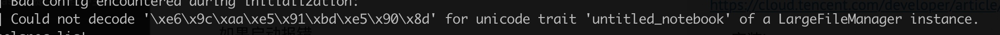

所属 Topic：数据科学工作流 · 类型：工具
Jupyter notebook#
类似于r的markdown
GitHub 上也直接支持 Jupyter notebook 的渲染。借助此出色的功能，你可以轻松地共享工作。http://nbviewer.jupyter.org/ 也会提供 GitHub 代码库中的 notebook ，以及存储在其他地方的 notebook。
名称 Jupyter 由 Julia、Python 和 R 组合而成，早期的两个非 Python 内核分别是 R 语言和 Julia 语言
1.安装#
- 如果安装anaconda 会自带
- 通过conda环境安装
conda install jupyter notebook，或者pip install jupyter notebook
# 启动
jupyter notebook
快捷键
在上方插入cell：a
在下方插入cell：b
剪切当前cell：x
删除当前cell：dd
撤销删除：u
上下：方向键 or jk (同vim)
扩展选中上下左右：shift+jk
当前cell转入markdown状态：m
当前cell转入代码状态：y
magic 关键字#
Magic 关键字是可以在单元格中运行的特殊命令，能让你控制notebook 本身或执行系统调用（例如更改目录）
Magic 命令的前面带有一个或两个百分号（% 或 %%），分别对应行 Magic 命令和单元格 Magic 命令。行 Magic 命令仅应用于编写 Magic 命令时所在的行，而单元格 Magic 命令应用于整个单元格。
对于 Python 内核，可以使用 Magic 命令 %pdb 开启交互式调试器。出错时，你能检查当前命名空间中的变量。
2.转换 notebook格式#
Notebook 只是扩展名为 .ipynb 的大型 JSON 文件。
转换格式的命令 nbconvert
jupyter nbconvert --to html notebook.ipynb #转成html
jupyter nbconvert --to markdown xxx.ipynb
目前支持的转换格式(https://nbconvert.readthedocs.io/en/latest/usage.html)
HTML,
LaTeX,
PDF,
Reveal.js HTML slideshow,
Markdown,
reStructuredText,
executable script,
notebook.
创建幻灯片
在 notebook 中创建幻灯片的过程像平常一样，但需要指定作为幻灯片的单元格和单元格的幻灯片类型。在菜单栏中，点击“View”（视图）>“Cell Toolbar”（单元格工具栏）>“Slideshow”（幻灯片），以便在每个单元格上弹出幻灯片单元格菜单。
#转换并在浏览器中展示
jupyter nbconvert notebook.ipynb --to slides --post serve
3.测试机上安装jupyter#
https://cloud.tencent.com/developer/article/1147487
- 安装jupyter
- 生成密码 python -c "import IPython;print IPython.lib.passwd()"
- 修改配置文件
/home/work/.jupyter/jupyter_notebook_config.py
如果启动报错
socket.gaierror: [Errno -2] Name or service not known
可以加上自己的ip
jupyter notebook --ip=xxxx
jupyter lab --ip=xxx
4.高阶工具jupyterlab，colab#
jupyter-lab
jupyter-lab 是jupyter-notebook的升级版，界面更加炫酷，也支持更多功能，强烈建议使用lab方式
colab
google 基于jupyter开发的存在在google driver上的网页版
https://colab.research.google.com/
本身功能上差不太多，主要是有search和share功能，查看别人分享的代码
一个简单的入门教程,在colab上你可以体验免费的GPU
https://github.com/xitu/gold-miner/blob/master/TODO1/google-colab-free-gpu-tutorial.md
Q: 将大文件发送的google drive
# 需要发送哪个文件？
file_name = "REPO.tar"
from googleapiclient.http import MediaFileUpload
from googleapiclient.discovery import build
auth.authenticate_user()
drive_service = build('drive', 'v3')
def save_file_to_drive(name, path):
file_metadata = {'name': name, 'mimeType': 'application/octet-stream'}
media = MediaFileUpload(path, mimetype='application/octet-stream', resumable=True)
created = drive_service.files().create(body=file_metadata, media_body=media, fields='id').execute()
return created
save_file_to_drive(file_name, file_name)
5.常见问题#
Q1: 若import了自己写的外部模块，如果这个外部模块有更新，再次执行import，jupyter是不会重新导入的
https://blog.csdn.net/ybdesire/article/details/86709727
对于 Python2.x
import some_module
reload(some_module)
对于 Python 3.2 and 3.3:
import some_module
import importlib
importlib.reload(some_module)
对于 Python3.4+
import some_module
import imp
imp.reload(some_module)
方法2：
auto_load
https://codeday.me/bug/20181215/447675.html
Q2. jupyter lab 启动提示

应该是编码问题，暂时的解决方案https://github.com/jupyter/notebook/issues/2789#issuecomment-338380336
LANG=zn jupyter lab
这个问题后来查了下说是python2的bug，安装python3就不会出现这个问题。
Q3. 切换内核
很多代码都是python2写的，用pip3安装jupyter之后，想切换写内核。
https://www.cnblogs.com/Jeffiy/p/4861528.html
jupyter kernelspec list
Q4: jupyterlab 中的内容，可以通过右键点击复制下载链接得到一个url，通过该url可以直接在网页上展示该文件。注意该url后面有个 _xsrf=xxxx的标记。
如果重启了jupyterlab，这个标记也需要更新
Q5: 如果安装了不同的conda环境，想切换不同的环境运行
conda install nb_conda_kernels
Q6:在自己的docker环境下想运行jupyter
# 在docker环境中安装
pip install jupyterlab
# 配置
jupyter notebook --generate-config
Q7: jupyter中保存时候报错:'_xsrf’ argument missing from POST
解决方法
在同一内核上打开另一个笔记本
或者转到/ tree aka Jupyter主页，然后刷新浏览器。
6 好用的插件#
https://blog.csdn.net/yh0vlde8vg8ep9vge/article/details/85333338
eryra: pipline https://zhuanlan.zhihu.com/p/256400000?utm_source=com.yinxiang&utm_medium=social&utm_oi=42148019830784
可以在jupyterlab中定义工作流 https://github.com/elyra-ai/examples/tree/master/pipelines/hello_world
从外部调用不同ipynb搭建pipline
7 jupyterlab 安装其他内核#
jupyterlab是jupyter notebook的一个升级版，界面更炫酷，而且同时支持R语言。
(1)配置R
要把先前打开的jupyterLab程序全部关闭后再进行以下操作
#安装必要的依赖包
install.packages(c('repr', 'IRdisplay','evaluate', 'crayon','pbdZMQ','devtools','uuid', 'digest'))
#IRkernel包没有放在CRAN上，需要通过GitHub安装
devtools::install_github('IRkernel/IRkernel')
IRkernel::installspec() #确保jupyterLab能找到R解释器安装位置
再次在终端运行
jupyter lab，选择R图标打开，你就可以在jupyterLab进行数据分析啦jupyterLab的主要特性绘图函数自动插入图片ggplot2绘图完美支持
(2)安装spark
以下主要是安装scala版本的notebook spark
(1)安装sbt（simple build tools）
下载sbt
wget https://dl.bintray.com/sbt/native-packages/sbt/0.13.11/sbt-0.13.11.tgz
下载完成后，配置相关PATH路径，命令sbt sbt-version验证。执行这个命令后，，就耐心等待吧，很久很久。。。。。。。因为要下载很多jar包。
新方案: https://toree.incubator.apache.org/docs/current/user/quick-start/
(3)安装scala内核
安装说明
https://almond.sh/docs/quick-start-install
SCALA_VERSION=2.12.8 ALMOND_VERSION=0.9.1 #版本需要根据自己情况设置
#
curl -Lo coursier https://git.io/coursier-cli
chmod +x coursier
./coursier bootstrap \
-r jitpack \
-i user -I user:sh.almond:scala-kernel-api_$SCALA_VERSION:$ALMOND_VERSION \
sh.almond:scala-kernel_$SCALA_VERSION:$ALMOND_VERSION \
-o almond
#
./almond --install
常用插件